"NOTICIAS DERRADEIRAS"
O Santo Padre João Paulo II continuará vivo na memória de todos nós, porque "viver não é somente existir". O sucessor do pescador Pedro, a quem JESUS confiou à guia do seu rebanho cristão, deixou para a posteridade um exemplo luminoso e de impressionante robustez. Quanto mais frágil fisicamente foi constatado, mais se avultava a sua estatura moral. Não desperdiçou um minuto sequer para a superação das diversas formas de opressão, para o diálogo, a promoção da paz, as mais exigentes propostas de vida em plenitude para os jovens e o testemunho inquestionável de um convívio permanente com a presença de DEUS e de nossa MÃE SANTÍSSIMA.
Escreveu o Cardeal Stanislaw Dziwisz, Secretário Particular de João Paulo II: "Servus servorum Dei (Servo dos servos de Deus). Verdadeiramente é o título que mais convém a um Papa. A expressão vem de Gregório Magno, no século VI. E ele perguntava a si mesmo: que serviço pode um Papa prestar a Igreja? Um santo espanhol, Domingos de Guzmão, no século XIII, sintetizou a resposta de qual o serviço que se deve esperar da Igreja: "negotium fidei et pacis" (um empreendimento de fé e de paz). Da Igreja se supõe, mas ninguém deve esperar necessariamente as competências de ordem terrena. João Paulo II contagiou o mundo com uma ação de ordem política e social. Ninguém há de negar-lhe esse mérito. Mas, ele não saiu da sua rota espiritual, ou seja, ele não abandonou jamais o caminho que lhe foi traçado pelo SENHOR JESUS DE NAZARÉ”.
“Pela consistência da sua vigorosa fé e pela entrega total de sua vida de homem e de pastor, João Paulo II alcançou um nível que atingiu as fímbrias do heroísmo, porque foi um verdadeiro e autêntico servo da fé e da paz”.
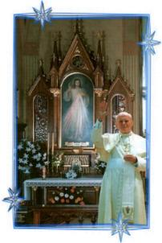
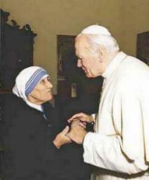
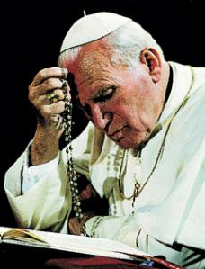
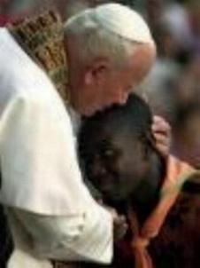
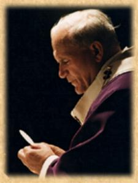
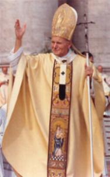
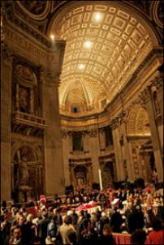
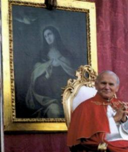
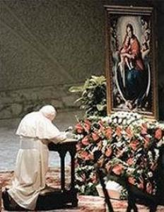
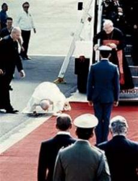
"BEATIFICAÇÃO"
O Papa João
Paulo II foi “beatificado” no Vaticano, numa Santa Missa celebrada diante da
Basílica de São Pedro, às 10 horas e 38 minutos do dia 1º de Maio de 2011, pelo
Sumo Pontífice, Papa Bento XVI, no segundo Domingo da Páscoa, denominado Domingo
da Divina Misericórdia.
às 10 horas e 38 minutos do dia 1º de Maio de 2011, pelo
Sumo Pontífice, Papa Bento XVI, no segundo Domingo da Páscoa, denominado Domingo
da Divina Misericórdia.
Mais de um milhão de pessoas acompanharam a cerimônia, pessoalmente ou através da transmissão televisiva.
Foi escolhido o milagre ocorrido com a religiosa francesa Irmã Marie Simon-Pierre Normand, do Instituto das Pequenas Irmãs das Maternidades Católicas (Institut des Petites Soeurs des Maternités Catholiques) que trabalhava num Hospital, na pequena cidade Aix-en-Provence, no sul da França, que lhe foi diagnosticado o mal de Parkinson. Ela não abandonou o trabalho, apesar dos incômodos da doença, manteve-se em seu posto e nas suas funções, estimulada pela força e vigor que lhe transmitia o Papa João Paulo II, com a mesma enfermidade.
Com a morte de Karol Wojtyla no dia 2 de Abril de 2005, um abismo de dúvidas se abriu diante de suas expectativas, deixando-a oprimida e inconsolável. E assim vivia cada vez mais envolvida pelo Parkinson, que é uma doença degenerativa, a qual seguidamente ia minando as suas forças e energia, impedindo-a de andar e de escrever corretamente.
Esta realidade levou as demais Irmãs da Congregação, a buscar um meio efetivo de ajudá-la a superar as dificuldades que atravessava, a fim de que ela pudesse recuperar a confiança e tranquilidade no cotidiano, continuando o seu caminho existencial, apesar da terrível enfermidade. A partir do dia 14 de Maio fizeram uma grande e fervorosa corrente de orações, suplicando a intercessão do Papa João Paulo II junto a DEUS, a fim de conseguir do SENHOR a graça da cura de Irmã Marie.
No dia 2 de Junho de 2005, apesar das intensas orações, ela se sentia num auge de depressão, derrotada pelo progresso da doença, cansada e oprimida pela dor, estava inconsolável. Então, pediu a sua Superiora que lhe dispensasse do trabalho no Hospital. Todavia, a Irmã Superiora, depois de estimular vigorosamente os seus sentimentos, com palavras de muito amor e fé na Providência Divina, não a liberou do serviço e aconselhou que ela renovasse com insistência e confiança, o seu pedido ao Papa João Paulo II, suplicando a intercessão dele junto a DEUS em seu benefício, objetivando alcançar a graça de sua cura, pela Misericórdia Divina.
Triste, mas com uma grande esperança no coração, foi para a Capela do Hospital e rezou durante longo tempo, enquanto sua face ficava inundada por caudalosas lágrimas, que sacramentavam a sua fervorosa súplica. Terminado o trabalho, foi para sua cela, rezou as últimas orações e dormiu. Teve uma noite tranquila, o seu espírito estava calmo e sua mente descansava no SENHOR.
Ao despertar pela manhã, sentiu que o seu organismo estava diferente e olhando a si mesma, percebeu que suas mãos não tremiam mais e tinha firmeza ao ficar de pé! Uma imensa alegria brotou de seu coração e de maneira irrefreável se lançou fora da cela para encontrar e expandir a sua indizível felicidade com as outras Irmãs! Irmã Marie Simon estava completamente curada, o milagre aconteceu de fato! Estava totalmente curada exatamente dois meses após o falecimento do Papa Karol Wojtyla, e ela, assim como todas as Irmãs da Congregação, atribuem o milagre da cura feito por DEUS, graças à eficaz e atenciosa intercessão do Papa.
 A documentação
do fato foi encaminhada ao Vaticano para análise e estudo. Já em Abril de 2009
existia mais cento e cinquenta (150) relatos de milagres acontecidos pela
intercessão do Papa João Paulo II, a serem avaliados pela Congregação para a
Causa dos Santos. A 19 de Dezembro desse ano, Bento XVI autorizou a promulgação
do decreto sobre a “heroicidade das virtudes” de João Paulo II.
A documentação
do fato foi encaminhada ao Vaticano para análise e estudo. Já em Abril de 2009
existia mais cento e cinquenta (150) relatos de milagres acontecidos pela
intercessão do Papa João Paulo II, a serem avaliados pela Congregação para a
Causa dos Santos. A 19 de Dezembro desse ano, Bento XVI autorizou a promulgação
do decreto sobre a “heroicidade das virtudes” de João Paulo II.
De acordo com as regras do Vaticano, uma cura inexplicável em termos médicos deve ser instantânea, completa e duradoura. Exatamente como aconteceu com a Irmã Marie. Por essa razão, o sacerdote polonês Slawomir Oder, que é o Postulador da Causa de Canonização do Papa, escolheu para a “beatificação”, o mencionado milagre. E por isso, a Comissão Médica da Congregação para a Causa dos Santos estudou e avaliou exaustivamente os atos da investigação canônica, assim como o laudo dos legistas. Eles examinaram uma quantidade apreciável de documentos com depoimentos das Irmãs da Congregação, de médicos e funcionários que trabalhavam no Hospital, de pessoas diversas que conheceram a Irmã Marie, e receitas médicas, dos medicamentos ingeridos pela Irmã, durante o tratamento do Parkinson.
É importante acrescentar, que tanto o Padre Postulador, como os médicos legistas, examinando os documentos que comprovam o milagre, como por exemplo, diversos fragmentos da caligrafia da religiosa , ficaram admirados com os textos escritos por ela antes e depois da cura, porque aconteceu uma mudança verdadeiramente impressionante.
Em 21 de Outubro de 2010, os peritos da Comissão Médica, após estudarem toda a documentação expressaram-se favoravelmente a inexplicabilidade científica da cura. Em 14 de Dezembro de 2010, os consultores Teólogos também se manifestaram de acordo. Em 11 de Janeiro de 2011, a Sessão Ordinária dos Cardeais e Bispos da Congregação emitiram unanimente uma sentença afirmativa sobre a cura definitiva da Irmã Marie Simon-Pierre Normand, como realizada por DEUS, após a intercessão do Papa João Paulo II invocada pela curada e muitos fiéis.
Dom Ângelo Amato, Cardeal Prefeito da Congregação das Causas dos Santos, confirmou que Sua Santidade, o Papa Bento XVI acolheu todas as provas e estando de perfeito acordo, aprovou a publicação do decreto que comprova o milagre atribuído à intercessão de João Paulo II, concluindo assim o processo para a sua “beatificação”, no dia 14 de Janeiro de 2011.
Para a festa e homenagens ao “Beato Karol Wojtyla”, foi escolhido o dia 22 de Outubro, que foi a data em que o Papa João Paulo II celebrou a primeira Santa Missa do seu Pontificado.
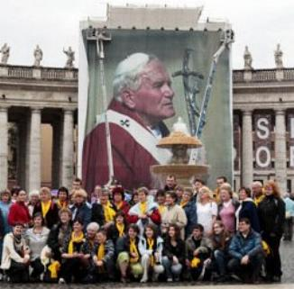
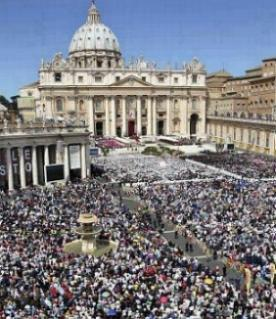
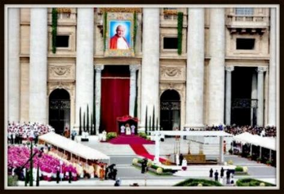
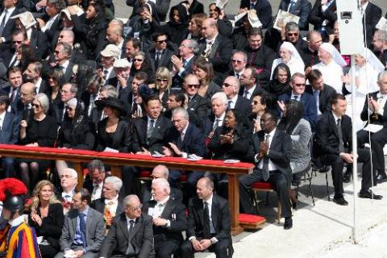
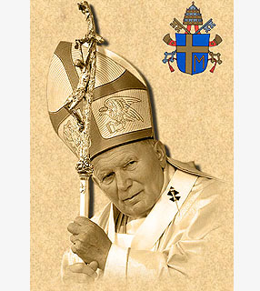
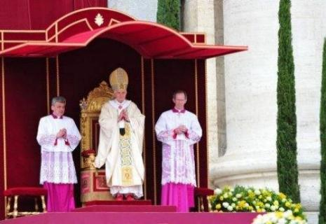
"CANONIZAÇÃO"
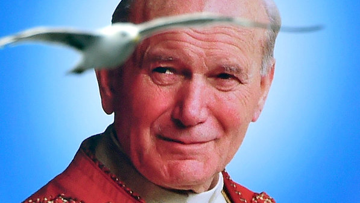
No Domingo, dia 27 de Abril de 2014, também denominado Domingo da Misericórdia, conforme a vontade de NOSSO SENHOR, recitando em latim, o Papa Francisco disse que, após consultas e orações a Divina Providência, "declaramos e definimos que o abençoado Papa João Paulo II seja Santo e o incluímos entre os Santos da Igreja, decretando que ele deve ser venerado como tal por todos os fiéis". A declaração foi recebida com aplausos da multidão que lotou a Praça de São Pedro.
"ORAÇÃO"
Para pedir favores pela intercessão do servo de DEUS, o Papa João Paulo II, rezar durante nove (9) dias seguidos:
Ó TRINDADE SANTA,
Nós VOS agradecemos por ter dado à Igreja o Papa João Paulo II e por ter feito resplandecer nele a ternura da VOSSA Paternidade, a glória da Cruz de CRISTO e o esplendor do ESPÍRITO DE AMOR.
Confiado totalmente na VOSSA infinita misericórdia e na materna intercessão de MARIA, ele foi para nós uma imagem viva de JESUS Bom Pastor, indicando-nos a santidade como a mais alta medida da vida cristã ordinária, que é o caminho para alcançarmos a comunhão eterna Convosco.
Segundo a VOSSA vontade, concedei-nos, por sua intercessão, a graça que imploramos, (fazer o pedido da graça desejada…) na esperança de que ele seja logo inscrito no número dos VOSSOS Santos. Amém.
Rezar Três PAI NOSSO + Três AVE MARIA + Três GLORIA.
"CONVITE"
Este Site foi construído pelo Apostolado dos Sagrados Corações. Convidamos-lhe a visitar o Portal do Apostolado, nele encontrará uma apreciável quantidade de Sites sobre o CRIADOR, o ESPÍRITO SANTO, JESUS DE NAZARÉ, sobre NOSSA SENHORA, os ANJOS DO SENHOR e Sites que apresentam a Vida e Obra de diversos SANTOS. Todos eles elaborados com muita dedicação e sobretudo, fundamentados na Sagrada Escritura, na Tradição Cristã, nas Manifestações Sobrenaturais e na Vida e Obra dos Santos, com a intenção maior de somente informar a Verdade.
http://www.apostoladosagradoscoracoes.com/
"E-MAIL"
Desejando comunicar-se conosco, por gentileza clicar na figura abaixo:

"FIRMA DE BUSCA"

 Retorna
ao PORTAL DO APOSTOLADO
Retorna
ao PORTAL DO APOSTOLADO